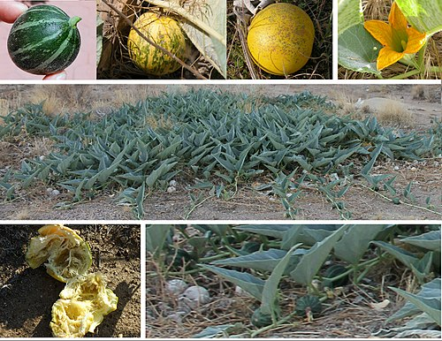

バッファロー・ゴードの種
DATE: 2026/2/21
バッファロー・ゴードの種は、Fallout: New Vegas に登場する消耗品です。
特性
つるから収穫するか、モハビの商人から購入できる一般的な消耗品です。
つるは道路沿いや開けた砂漠で見つけることができ、その薄緑色で識別可能です。
アドオン「Lonesome Road」を導入している場合、バッファロー・ゴードの種はサージカルチューブと組み合わせて、スネークバイト止血帯を作成するために使用されます。
効果
2秒間、毎秒HPが +1 回復します。
ハードコアモードのみ：飢餓-10 中毒性：なし 重量：0.02 価値：2キャップ
サバイバルスキルによる効果
スキル値に応じて効果が変動します。
- スキル 10：2秒間、毎秒HP +1（飢餓 -12）
- スキル 20：2秒間、毎秒HP +1（飢餓 -14）
- スキル 30：2秒間、毎秒HP +1（飢餓 -16）
- スキル 40：2秒間、毎秒HP +1（飢餓 -18）
- スキル 50：2秒間、毎秒HP +2（飢餓 -20）
- スキル 60：2秒間、毎秒HP +2（飢餓 -22）
- スキル 70：2秒間、毎秒HP +2（飢餓 -24）
- スキル 80：2秒間、毎秒HP +2（飢餓 -26）
- スキル 90：2秒間、毎秒HP +2（飢餓 -28）
- スキル 100：2秒間、毎秒HP +3（飢餓 -30）
ロケーション

植物
モハビ・ウェイストランド全域で合計80個の採取可能なバッファロー・ゴードの植物が見つかります。
- モハビ・アウトポスト本部ビルの裏にあるピクニックエリアに4つの植物があり、道路を挟んだ向かい側のバラモンの囲いのそばに3つあります。
- プリムビーグル保安官代理の住居のすぐ外に2つの植物があります。
- H&Hツール工場の西にある近隣地域の廃墟となった家や通りの間に、いくつかのつるが点在しています。
- モンテカルロ・スイートの南東に巨大なバージョンの植物が見つかります。
- グッドスプリングス雑貨店の前の道路に1つあります。
種
- ラッキー38カジノの東側にあるバーの後ろの棚に7個あります。
- グッドスプリングスゲーム開始時のドック・ミッチェルの家に3個の種があります。これらには所有権が設定されておらず、プレイヤーキャラクターがカルマを失うことなく取得できます。
- ヘリオス１発電所ビルの最後の部屋、展望室のドアの隣にいくつか見つかります。
- 188交易所とボルダーシティの間の道路上で見つかります。
- 部族の村の最南端のキャンプにある棚に、所有権のない種が2個あります。
注記
以前はゲッコー・ケバブを作るために使用されていましたが、パッチ 1.2.0.31x 以降、材料の一つではなくなりました。
舞台裏

バッファロー・ゴードの種は、現実世界の植物であるバッファロー・ゴードに基づいています。
バグ
PlayStation 3版において、バッファロー・ゴードの種を落としてから見ると、重量が 0.00 と表示されることがあります。
感想
バッファロー・ゴードの種は、New Vegasの砂漠地帯でサバイバル生活を送る運び屋にとって、地味ながらも生命線となり得るアイテムですね。
ハードコアモードでの有用性: 重量が軽く、かつ飢餓値を下げてくれるため、長旅の携帯食料として非常に優秀です。特に序盤の金欠時や食料不足時には、そこら辺に生えているつるから手軽に入手できる点が頼もしいです。
毒対策への転用: アドオン導入後はスネークバイト止血帯の材料になるため、カサドールやナイトストーカーが徘徊する危険地帯へ挑む際の必需品へと価値が上がります。単なる種が命を救う薬に変わるというクラフト要素は、ウェイストランドの知恵を感じさせます。
不運な科学者の末路: ビッグマウンテンでのエピソード（種を喉に詰まらせて死に、ロボット犬の銃を持って蘇る）は、Fallout らしいブラックユーモア全開の小話であり、たかが種一つにもこうした背景ストーリーが用意されている点に開発者のこだわりを感じます。
ハードコアモードでの有用性: 重量が軽く、かつ飢餓値を下げてくれるため、長旅の携帯食料として非常に優秀です。特に序盤の金欠時や食料不足時には、そこら辺に生えているつるから手軽に入手できる点が頼もしいです。
毒対策への転用: アドオン導入後はスネークバイト止血帯の材料になるため、カサドールやナイトストーカーが徘徊する危険地帯へ挑む際の必需品へと価値が上がります。単なる種が命を救う薬に変わるというクラフト要素は、ウェイストランドの知恵を感じさせます。
不運な科学者の末路: ビッグマウンテンでのエピソード（種を喉に詰まらせて死に、ロボット犬の銃を持って蘇る）は、Fallout らしいブラックユーモア全開の小話であり、たかが種一つにもこうした背景ストーリーが用意されている点に開発者のこだわりを感じます。
TAGS: #FalloutNV#Plant
This article uses material from the Fallout wiki at Fandom and is licensed under the Creative Commons Attribution-Share Alike License.